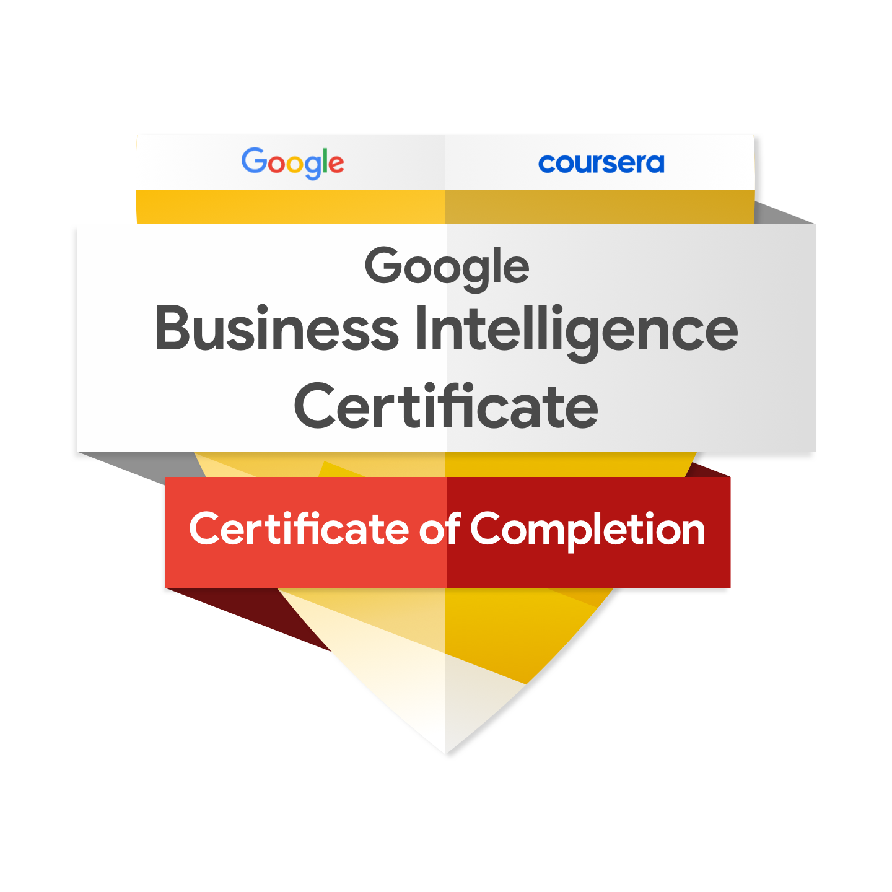

Summary
My name is Mavillapalli Venkata Tarun Kumar, I am from Hyderabad, Telangana, India. A passionate and versatile individual with a strong academic foundation, a wealth of certifications, and a track record of impactful projects and contributions in both the tech and community spheres. With a realistic and optimistic mindset, I possess strong critical thinking abilities and a deep passion for tackling complex challenges.
Education: Currently pursuing a Master's Degree in Data Science at the University of Naples Federico II. Holds an International Bachelor's Degree in Computer Science Engineering from Amity University, India which is 3 Continental Programs at Birkbeck, University of London, and Adelphi University in the UK and the US.
I have a strong foundation in programming with Python, R, and SQL and I'm proficient in various data analysis tools, including Jupyter Notebook, RStudio, Tableau, Power BI, and Excel. My expertise extends to data preprocessing, encompassing data cleaning and feature engineering, as well as data manipulation using Pandas and NumPy. I excel in d ata visualization with Matplotlib, Seaborn, Plotly, and the art of storytelling through data. Additionally, I'm comfortable with cloud computing on Google Cloud and skilled in data mining techniques such as web scraping, ETL processes, and data warehousing.
My statistical skills cover descriptive statistics, inferential statistics, hypothesis testing, and regression. I'm proficient in machine learning, including supervised and unsupervised learning, classification, regression, clustering, and dimensionality reduction, utilizing tools like Scikit-Learn, TensorFlow, and Keras. My deep learning capabilities include neural networks, CNN, RNN, and NLP. I'm also well-versed in Git/GitHub and possess a strong commitment to data ethics and privacy.
I take pride in my problem-solving capabilities, effective communication, and keen interpretation of data. I understand the significance of key performance indicators (KPIs) and am meticulous in my attention to detail, enabling me to derive actionable insights from data. In addition to my technical skills, I am a collaborative and solutions-driven individual. My ambition is to apply my knowledge to gain practical experience.
I am eager to learn from experienced professionals and contribute to the success and growth of your organization. My commitment to excellence is reflected in the professional certifications I hold, and you can explore some of my project work on my GitHub account. I am excited to bring my skills and enthusiasm to any opportunity given.
Professionally Certified in IBM Machine Learning, Google Business Intelligence, Google Cloud Digital Leader Training, Google Data Analytics, Google Project Management, Salesforce Certified Administrator showcasing proficiency in cutting-edge technologies.
Got into Apple Developer Academy, we embraced Challenge-Based Learning (CBL) to ideate, prototype, and develop an app. We mastered various tools and skills: Figma, Miro, Keynote, Notion Productivity Software, SF symbols, TestFlight. Developed skills App Development Lifecycle, Swift, Feedback development, Team Management while focusing on enhancing user experiences.
Spearheaded projects like Fake and Real News Detection with a BERT-based chatbot, Forecasting Weight Dynamics and Visualizing Historical Data A Time Series Analysis, Statistical Data Analysis on Human Activity Recognition Data Set, demonstrating expertise in data analysis, machine learning, and real-world problem-solving.
Certified Quality Management Systems - British Standards Institution, BSI, a global leader, offers quality management system certification based on ISO 9001:2015, enhancing organizations' practices to meet customer requirements and reduce defects, applicable across industries and sizes & Risk Management System - British Standards Institution, BSI's Risk Management Systems standard, based on ISO 31000:2018, offers a systematic framework for organizations to enhance risk management across all industries and sizes, addressing risk understanding, assessment, treatment, communication, and monitoring.
Published a paper "The Machine Predicted Market" in International Conference on Computational Techniques, Electronics and Mechanical Systems (CTEMS), which is delving into the intriguing world of Algorithmic Trading and machine-predicted markets.
Have an experience as Associate Salesforce AI/ChatBot Developer @ Neuraflash, Hyderabad. Interned as team member @ A.J. Drexel Autism Institute, Philadelphia.
Has a Volunteering experience in Escort Volunteer for International Guest, Organising And Management Volunteer for Amity Youth Fest(AYF), Security Management Volunteer for Amity Youth Fest(AYF)

